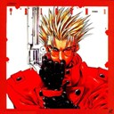
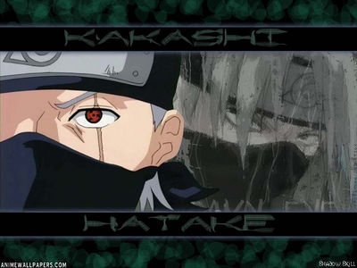

Forums galactiques > Assemblée Galactique : diplomatie officielle > Coalition Trigun
Pages : 1
| kenuo Respect diplomatique : -14  31/10 ETU 18:53 | Score : 0 Détails Je me vois contraint a dissoudre la coalition devant les départs intempestif et pas toujours justifié de ces membres.
Donc je voudrais vous faire part a vou tous de ma déception je pense que de grandes choses auraient pu etre réaliser si il y avait eu plus de paticipation... Kenuo quitta l'assemblé déçu, il se sera battu pour avoir voulus contruire une belle paix durable et stable, mais malheureusement tout a échoué, son vaisseaux partis dans le ciel, il ne voulait pu voir personne pour le moment! | ||
| Djil Respect diplomatique : 211  31/10 ETU 20:24  | Score : 0 Détails je suis d'accord avec vous kenuo est je suis attristé par cette dissolution car malgré les vagues, je ne l'ai jamais quittée et j'ai toujours cru en elle...
| ||
| Amon Tobin Respect diplomatique : 32 31/10 ETU 23:38 | Score : 0 Détails Le commercant Amon Tobin regarda le vaisseau de son ami Kenuo partir! Il l'avait toujours servit avec foi et conviction! Son visage se ternier, on sentait qu'il était meurtrit! "Qu'allait il devenir de la galaxie si des coalitions comme Trigun disparaisait?" pensait il! Son regard se leva dans le ciel, des planètes en feu périssait devant lui!
Il sortit une cigarette de son long impert noir! "Que c'est bon!" pensa t il. "Pourquoi tant de guerre? Tout ce monde qui s'entretue pour plus de puissance, ca me dégoute!" Amon tobin cracha avec dégout! Il baissa la tete en avouant son impuissance! l'assemblée galactique n'avancait pas, toujours les meme question lui passait dans la tete! Il regarda a nouveau l'univers dans lequel les feux du vaisseau de Kenuo s'etaignait! "j'aimerai que les commandants qui ont tenté de prendre le controle de la galaxie et qui ont échoué me disent pourquoi? Qu'avait vous tiré de tout cela?" Amon Tobin écrasa sa cigarette et se tourna vers son vaisseau marchant d'elite, il partit retrouver sa planete natal pour oublier les problemes de l'assemblée, le coeur pris par le désir de comprendre! |
Pages : 1
Forums galactiques > Assemblée Galactique : diplomatie officielle > Coalition Trigun